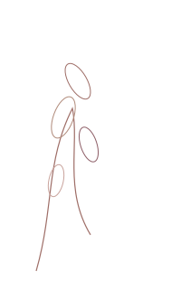
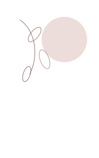
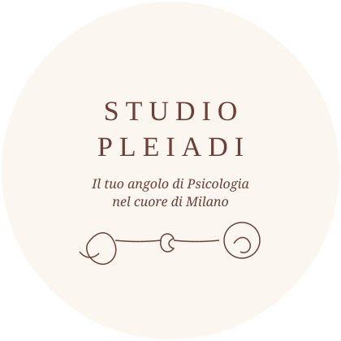

Disturbo ossessivo-compulsivo
Trattamento specialistico del DOC, in collaborazione con la rete CEDOC, e percorsi anche per chi sta accanto.



Via Faruffini, Milano
Studio Pleiadi è un angolo di psicologia nel cuore di Milano. Accogliamo adolescenti, giovani e adulti in un clima di fiducia, ascolto e rispetto, dove il dolore può trovare un posto dove andare.
Nella stanza di terapia, il dolore ha finalmente preso un posto dove andare. Quello dei pazienti e il nostro. Tessuti insieme.
Martina Giuliano, fondatrice
Cosa facciamo
Trattamento specialistico del DOC, in collaborazione con la rete CEDOC, e percorsi anche per chi sta accanto.
Supporto per ansia, depressione, disturbi di personalità ed emozioni complesse come vergogna, rabbia e ritiro.
Gruppi di mindfulness, libroterapia e crescita personale. Prima dell’ingresso è previsto un breve colloquio conoscitivo.
Danzamovimentoterapia e artiterapie per integrare mente e corpo come strumenti di consapevolezza e trasformazione.
Percorsi su disturbi dell’alimentazione, transizioni evolutive, lutto, genitorialità e mondo femminile.
Sostegno personalizzato per persone con funzionamento neurodivergente, in un lavoro di squadra e senza giudizio.
Chi siamo
Fondatrice · Psicoterapeuta CBT
Lavora a Milano con adolescenti, giovani e adulti. Si occupa soprattutto di DOC, in rete con CEDOC, e di disturbi di personalità. Conduce gruppi di libroterapia, mindfulness e crescita personale.
@martimartigiul
Medico · Psicoterapeuta
Specialista in Psicologia Clinica. Integra medicina, relazione e terapie espressive, con specializzazione in danzamovimentoterapia. Offre anche sostegno farmacologico per ansia e depressione.
@simona_rozzi
Psicologa · Danzamovimentoterapeuta
Unisce psicologia e artiterapie. Lavora con adolescenti e adulti su ansia, cambiamenti di vita, DOC e disturbi alimentari. In formazione presso la Scuola di Psicoterapia Integrata di Milano.
@saraannibali.psicologa
Psicologa · Specializzanda CBT
In formazione presso Studi Cognitivi. Collabora con IRCCS San Raffaele Ville-Turro. Interessi: personalità, DOC, ansia e depressione, con esperienza sui gruppi e sul disturbo borderline.
@eleonoralazzarino.psicologa
Psicologa · Specializzanda CBT
Specializzata nel trattamento del DOC. Offre supporto per ansia, stress, lutto, transizioni evolutive e percorsi per il funzionamento neurodivergente.
@lablonda_luana_psicologa
Scrivici
È già possibile manifestare il proprio interesse. Prima dell’ingresso nei gruppi è previsto un breve colloquio conoscitivo.